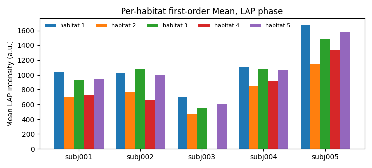

Note
Go to the end to download the full example code.
Habitat radiomics with volume, MSI and ITH#
Background. Once every voxel has a habitat id, a patient can be described in several complementary ways: how much of each habitat there is (volume), how the habitats border each other (MSI), how fragmented they are (ITH score), and what the image intensities look like inside each habitat (per-habitat radiomics). A statistics tool needs all of them as columns of one table, one row per patient.
Purpose. You will add two PyRadiomics families to the quantify stages of the approved two-step analysis, label all five demo patients, get one combined feature table, see which column family each column belongs to, check one relation between the per-habitat and whole-ROI columns, and write the table as a CSV file.
When to use. Whenever the habitat analysis feeds a downstream statistical or modelling step that expects a flat patient-by-feature table.
Key terms. Full definitions are on Concepts.
volume –
habitat_<id>_voxel_countandhabitat_<id>_volume_fractionfor every habitat id of the model.MSI (multiregional spatial interaction) – counts of face-connected voxel pairs between habitat classes (
firstorder_<i>_and_<j>, and the same counts normalised,firstorder_normalized_<i>_and_<j>), plus second-order summaries of that matrix (contrast,homogeneity,correlation,energy). Compare them only between patients labelled by the same cohort model.ITH score –
ith_score, 0 when every habitat is one connected piece and closer to 1 the more fragmented the habitats are.per-habitat radiomics (
each_habitat) – PyRadiomics features of each original image inside each habitat, one column per habitat, feature and modality:habitat_<id>_<feature>_of_<modality>, plushas_habitat_<id>(1 when the habitat is present). A habitat absent from a patient givesNaN, not 0.whole-ROI radiomics (
traditional) – the same PyRadiomics features inside the whole ROI (all habitats together), named<feature>_of_<modality>: the classic radiomics reference.first-order features – statistics of the voxel intensities alone (mean, percentiles, energy, entropy, …), no texture.
Analysis definition. The approved two-step definition (four DCE
phases, subject-level winsorize + z-score, 30 k-means supervoxels,
pool, 10-bin cohort binning, k-means 2..10 by elbow, nearest centroid).
One deviation: the graph stage is left out to keep the page fast;
it is covered in Habitat graph network features.
PyRadiomics is limited to the first-order class to stay fast, and the
whole-ROI family to the LAP phase.
Note
The habitat definition is fitted on two patients and applied to the other three of the 5-subject demo cohort. Five rows are enough to show the table, not to analyse it.
Change DATA / MODALITIES / ROI to your preprocessed tree.
Load the cohort#
The first two demo patients define the habitats; all five get a row. sphinx_gallery_thumbnail_number = 1
from pathlib import Path
from typing import Dict, List
import matplotlib.pyplot as plt
import numpy as np
import pandas as pd
from habit.contracts import cohort_from_directory
from habit.datasets import fetch_demo
from habit.execution import backend_from_policy
from habit.recipes import Study
from habit.spec import HabitatSpec, Spec, Stage
from habit.spec.policy import RunPolicy
from habit.viz import plot_cluster_validation_from_report
# Change DATA / MODALITIES / ROI to your preprocessed layout.
DATA = fetch_demo()
MODALITIES = ("pre_contrast", "LAP", "PVP", "delay_3min")
ROI = "LAP"
cohort = cohort_from_directory(DATA, modalities=MODALITIES, roi=ROI)
train = cohort[:2]
Path("out").mkdir(exist_ok=True)
print(cohort)
HABIT demo data (cached)
DATA (preprocessed root): C:\Users\dongm\.habit_data\demo-data-v1\preprocessed
On-disk inventory of this folder:
subjects (5): subj001, subj002, subj003, subj004, subj005
image series: LAP, PVP, delay_3min, pre_contrast
mask keys: LAP, PVP, delay_3min, pre_contrast
example image: images/subj001/delay_3min/WATER__BH_Ax_LAVA_Flex_3min_Series0012.nrrd
example mask: masks/subj001/delay_3min/WATER__BH_Ax_LAVA_Flex_10min_Series0017_mask.nrrd
Your own data must use the same folder tree (change IDs / series names):
DATA/
images/<subject_id>/<modality>/<one image file>
masks/<subject_id>/<roi>/<one mask file>
Then load it with the same call the demos use:
cohort = cohort_from_directory(DATA, modalities=("LAP",), roi="LAP")
Swap DATA / modalities / roi to match your tree. Mask key is often the
same as one image series (here LAP).
Cohort(5 subjects [subj001, subj002, subj003, subj004, subj005])
PyRadiomics settings#
A PyRadiomics parameter mapping, exactly as in a PyRadiomics YAML file.
"firstorder": [] enables every first-order feature (18 of them) and
nothing else. binWidth only matters for the two bin-based
first-order features (Entropy, Uniformity). The features are computed
on the ORIGINAL images: the winsorize / z-score stages above only
prepare the clustering features and do not change what PyRadiomics
reads. MR intensities are in arbitrary units, so intensity features
such as Mean or Energy are only comparable between patients whose
images were intensity-harmonised before HABIT.
radiomics_params = {
"imageType": {"Original": {}},
"featureClass": {"firstorder": []},
"setting": {"binWidth": 25},
}
Declare the analysis with every quantify family#
Each quantify stage adds its columns to the same one-row-per-patient
table. The stage label (first argument) is free text; the Spec name
picks the registered habitat feature extractor.
spec = HabitatSpec(
name="habitat_radiomics_two_step",
stages=(
Stage("extract", Spec("raw", {"modalities": list(MODALITIES), "roi": ROI})),
# Subject-level: clip each column to the patient's own 1st..99th percentile.
Stage("preprocess", Spec("winsorize", {"winsor_limits": [0.01, 0.01]})),
# Subject-level: rescale each column to 0..1 with the patient's own range.
Stage("preprocess2", Spec("zscore")),
Stage("partition", Spec("kmeans", {"n_supervoxels": 30})),
Stage("pool", Spec("pool")),
# Cohort-level: bin edges learned on the training supervoxels, stored in the model.
Stage(
"fit",
Spec(
"kmeans",
{"min_habitats": 2, "max_habitats": 10, "validation": "elbow", "n_init": 10},
),
),
Stage("assign", Spec("nearest_centroid")),
# Label-map families: they read only the habitat map.
Stage("volume", Spec("volume")),
Stage("msi", Spec("msi")),
Stage("ith", Spec("ith_score")),
# Intensity families: they read the original images as well.
# Per habitat, all four phases.
Stage(
"habitat_radiomics",
Spec("each_habitat", {"params": radiomics_params, "modalities": list(MODALITIES)}),
),
# Whole ROI, one phase: the classic radiomics reference column set.
Stage(
"roi_radiomics",
Spec("traditional", {"params": radiomics_params, "modalities": ["LAP"]}),
),
),
random_seed=0,
)
result = Study(spec).fit_predict(
train,
backend=backend_from_policy(
RunPolicy(backend="serial", on_subject_failure="continue")
),
)
print(result.habitat_model.summary())
Cohort.map[_ComputeUnits]: 0%| | 0/2 [00:00<?, ?it/s]
Cohort.map[_ComputeUnits]: 50%|█████ | 1/2 [00:02<00:02, 2.20s/it]
Cohort.map[_ComputeUnits]: 100%|██████████| 2/2 [00:03<00:00, 1.84s/it]
Cohort.map[_ComputeUnits]: 100%|██████████| 2/2 [00:03<00:00, 1.84s/it]
Cohort.map[_AssignPrecomputedUnits]: 0%| | 0/2 [00:00<?, ?it/s]
Cohort.map[_AssignPrecomputedUnits]: 50%|█████ | 1/2 [00:03<00:03, 3.76s/it]
Cohort.map[_AssignPrecomputedUnits]: 100%|██████████| 2/2 [00:07<00:00, 3.68s/it]
Cohort.map[_AssignPrecomputedUnits]: 100%|██████████| 2/2 [00:07<00:00, 3.68s/it]
HabitatModel kmeans-3432f3b65bfec11a
habitats : 5
features (4) : pre_contrast, LAP, PVP, delay_3min
defining cohort : n=2
modalities : pre_contrast, LAP, PVP, delay_3min
cohort digest : cc1b16a34cc7478d...
produced by : habitat_model_fitter.kmeans
habit version : 3.0.0
random seed : 0
preprocessing state: inertia, selection_report, validation
Elbow / Kneedle caveat and criterion table#
HABIT validation elbow is the same rule as kneedle. It runs
KneeLocator on k-means inertia (within-cluster sum of squares),
curve convex, direction decreasing (Satopaa, Albrecht, Irwin, and
Raghavan, 2011, Finding a “Kneedle” in a Haystack, IEEE ICDCS).
Normalize k and inertia to the unit square, draw the chord from the
first point to the last, and take the k farthest from that chord; a
smooth curve often places this knee to the right of the bend a person
sees. Literature “elbow” means inspecting within-cluster dispersion
versus k (Thorndike RL, 1953, Who belongs in the family?, Psychometrika
18(4):267-276) — not a second-difference formula. The discrete-curvature
elbow (visual elbow, computed) maximizes the second difference of
inertia (HABIT pre-v1.0 elbow). Habitat maps keep the Kneedle K.
_report = result.habitat_model.preprocessing_state["selection_report"]
_candidates = [int(k) for k in _report["candidates"]]
_inertia = __import__("numpy").asarray(_report["scores"][_report["methods"][0]], dtype=float)
def _discrete_curvature_elbow_k(cluster_range, inertia_scores):
"""Return k maximizing the second difference of inertia (pre-v1.0 elbow)."""
import numpy as np
values = np.asarray(inertia_scores, dtype=float)
cluster_range = [int(k) for k in cluster_range]
if values.size < 3:
return int(cluster_range[int(np.argmin(values))])
return int(cluster_range[int(np.argmax(np.diff(values, n=2))) + 1])
_k_kneedle = int(result.habitat_model.n_habitats)
_k_discrete = _discrete_curvature_elbow_k(_candidates, _inertia)
from habit.habitat_model import KMeansHabitatModelFitter as _KMeansFitter
_k_table = {"elbow_kneedle": _k_kneedle, "discrete_curvature_elbow": _k_discrete}
for _name in ("silhouette", "calinski_harabasz", "davies_bouldin"):
_fitter = _KMeansFitter(
min_habitats=2, max_habitats=10, validation=_name, n_init=10
)
_fitter.set_random_state(0)
_k_table[_name] = _fitter.fit(result.units, cohort=train).n_habitats
print("K by criterion (elbow/kneedle=Kneedle; sil/CH maximize; DB minimize; skip gap):")
for _name, _k in _k_table.items():
print(f" {_name}: {_k}")
print(f"habitat map uses Kneedle K = {_k_kneedle}")
_criteria = ("elbow", "silhouette", "calinski_harabasz", "davies_bouldin")
_vote = _KMeansFitter(
min_habitats=2, max_habitats=10, validation=list(_criteria), n_init=10
)
_vote.set_random_state(0)
_vote_report = dict(
_vote.fit(result.units, cohort=train).preprocessing_state["selection_report"]
)
_vote_report["selected"] = {
"elbow": _k_kneedle,
"silhouette": _k_table["silhouette"],
"calinski_harabasz": _k_table["calinski_harabasz"],
"davies_bouldin": _k_table["davies_bouldin"],
}
fig = plot_cluster_validation_from_report(
_vote_report,
title="K criteria (elbow panel: x = Kneedle)",
)
fig.axes[0].plot(
_k_discrete,
float(_inertia[_candidates.index(_k_discrete)]),
marker="o",
markersize=8,
markerfacecolor="none",
markeredgecolor="C2",
markeredgewidth=1.4,
linestyle="none",
label=f"discrete-curvature k={_k_discrete}",
)
fig.axes[0].legend(loc="best", fontsize=8)
fig.savefig("out/habitat_radiomics_k_criteria.png", dpi=150, bbox_inches="tight")
plt.show()
# The other three patients are labelled with the fitted definition (no
# refit); ``spec=`` runs the same quantify stages on them.
prediction = Study.from_model(result.habitat_model, spec=spec).predict(cohort[2:])
table = pd.concat([result.features.frame, prediction.features.frame], ignore_index=True)
habitat_ids = result.habitat_maps[0].habitat_ids
print("habitat ids:", habitat_ids)
print("table shape (patients x columns incl. 'subject'):", table.shape)

K by criterion (elbow/kneedle=Kneedle; sil/CH maximize; DB minimize; skip gap):
elbow_kneedle: 5
discrete_curvature_elbow: 3
silhouette: 2
calinski_harabasz: 2
davies_bouldin: 2
habitat map uses Kneedle K = 5
Cohort.map[_LabelAndDescribe]: 0%| | 0/3 [00:00<?, ?it/s]
Cohort.map[_LabelAndDescribe]: 33%|███▎ | 1/3 [00:05<00:10, 5.14s/it]
Cohort.map[_LabelAndDescribe]: 67%|██████▋ | 2/3 [00:09<00:04, 4.92s/it]
Cohort.map[_LabelAndDescribe]: 100%|██████████| 3/3 [00:17<00:00, 5.81s/it]
Cohort.map[_LabelAndDescribe]: 100%|██████████| 3/3 [00:17<00:00, 5.81s/it]
habitat ids: (1, 2, 3, 4, 5)
table shape (patients x columns incl. 'subject'): (5, 439)
Column families#
The prefix / suffix of a column name tells which family produced it. The helper below only sorts names; it computes nothing.
MSI_SECOND_ORDER = {"contrast", "homogeneity", "correlation", "energy"}
def column_family(column: str) -> str:
"""Return the feature family a combined-table column belongs to.
Args:
column: Column name of the combined feature table.
Returns:
str: Human-readable family name.
"""
if column == "subject":
return "id"
if column.startswith("has_habitat_"):
return "habitat presence (each_habitat)"
if column.startswith("habitat_") and "_original_" in column:
return "per-habitat radiomics (each_habitat)"
if column.startswith("habitat_") and column.endswith(("_voxel_count", "_volume_fraction")):
return "volume"
if column.startswith("firstorder_") or column in MSI_SECOND_ORDER:
return "MSI"
if column == "ith_score":
return "ITH"
if column.startswith("original_"):
return "whole-ROI radiomics (traditional)"
return "other"
families = pd.Series({c: column_family(c) for c in table.columns})
summary = families.groupby(families).agg(["count", lambda s: ", ".join(list(s.index[:2]))])
summary.columns = ["n_columns", "example columns"]
print(summary.to_string())
n_columns example columns
ITH 1 ith_score
MSI 44 firstorder_0_and_1, firstorder_0_and_2
habitat presence (each_habitat) 5 has_habitat_1, has_habitat_2
id 1 subject
per-habitat radiomics (each_habitat) 360 habitat_1_original_firstorder_Energy_of_pre_contrast, habitat_1_original_firstorder_TotalEnergy_of_pre_contrast
volume 10 habitat_1_voxel_count, habitat_1_volume_fraction
whole-ROI radiomics (traditional) 18 original_firstorder_10Percentile_of_LAP, original_firstorder_90Percentile_of_LAP
A first look at the label-map families#
Volume fractions and ITH per patient. The MSI columns are in the table and exported, but their values are not interpreted on this page.
fraction_columns = [f"habitat_{hid}_volume_fraction" for hid in habitat_ids]
print(table.set_index("subject")[fraction_columns + ["ith_score"]].round(3).to_string())
habitat_1_volume_fraction habitat_2_volume_fraction habitat_3_volume_fraction habitat_4_volume_fraction habitat_5_volume_fraction ith_score
subject
subj001 0.096 0.336 0.312 0.044 0.212 0.965
subj002 0.081 0.107 0.440 0.213 0.159 0.907
subj003 0.105 0.415 0.208 0.000 0.272 0.504
subj004 0.069 0.274 0.333 0.063 0.260 0.844
subj005 0.132 0.348 0.270 0.081 0.169 0.984
Per-habitat versus whole-ROI radiomics#
The habitats split the ROI without overlap, so the whole-ROI mean LAP intensity must equal the voxel-count-weighted average of the per-habitat mean LAP intensities. This is a consistency check between three families of the same table (volume, each_habitat, traditional).
check_rows: List[Dict[str, object]] = []
for _, row in table.iterrows():
counts = np.array([row[f"habitat_{hid}_voxel_count"] for hid in habitat_ids], dtype=float)
means = np.array(
[row[f"habitat_{hid}_original_firstorder_Mean_of_LAP"] for hid in habitat_ids],
dtype=float,
)
present = counts > 0 # absent habitats have NaN means and zero weight
weighted = float(np.sum(counts[present] * means[present]) / np.sum(counts[present]))
roi_mean = float(row["original_firstorder_Mean_of_LAP"])
check_rows.append(
{
"subject": row["subject"],
"ROI mean LAP": roi_mean,
"weighted habitat mean LAP": weighted,
"match": bool(np.isclose(roi_mean, weighted, rtol=1e-6)),
}
)
check = pd.DataFrame(check_rows).set_index("subject")
print(check.round(3).to_string())
print("all patients consistent:", bool(check["match"].all()))
ROI mean LAP weighted habitat mean LAP match
subject
subj001 859.751 859.751 True
subj002 937.043 937.043 True
subj003 547.094 547.094 True
subj004 1000.445 1000.445 True
subj005 1397.582 1397.582 True
all patients consistent: True
Mean LAP intensity inside each habitat#
One bar group per patient, one bar per habitat, from the
habitat_<id>_original_firstorder_Mean_of_LAP columns.
fig, ax = plt.subplots(figsize=(7.5, 3.4))
width = 0.8 / len(habitat_ids)
x = np.arange(len(table))
for offset, hid in enumerate(habitat_ids):
ax.bar(
x + offset * width - 0.4 + width / 2,
table[f"habitat_{hid}_original_firstorder_Mean_of_LAP"],
width=width,
label=f"habitat {hid}",
)
ax.set_xticks(x)
ax.set_xticklabels(table["subject"])
ax.set_ylabel("Mean LAP intensity (a.u.)")
ax.set_title("Per-habitat first-order Mean, LAP phase")
ax.legend(frameon=False, ncol=len(habitat_ids), fontsize=8)
fig.tight_layout()
fig.savefig("out/habitat_radiomics_mean_lap.png", dpi=150, bbox_inches="tight")
plt.show()

Export for statistics#
One CSV, one row per patient, the subject column first. Any
statistics tool can read it. Reading it back checks that nothing was
lost on the way.
csv_path = Path("out/habitat_radiomics_features.csv")
table.to_csv(csv_path, index=False)
reread = pd.read_csv(csv_path)
print(csv_path.name, reread.shape)
print("round trip identical:", bool(reread.shape == table.shape and np.allclose(
reread.drop(columns="subject").to_numpy(dtype=float),
table.drop(columns="subject").to_numpy(dtype=float),
equal_nan=True,
)))
habitat_radiomics_features.csv (5, 439)
round trip identical: True
How to read the result#
Measured on this page (K = 4 by the elbow rule on subj001 + subj002; habitat ids 1..4; five patients):
The combined table has 5 rows and 352 columns including
subject: 8 volume, 4 habitat-presence, 288 per-habitat radiomics (4 habitats x 18 first-order features x 4 phases), 18 whole-ROI radiomics (18 features x LAP), 32 MSI and 1 ITH column.ITH scores ranged from 0.84 (subj003) to 0.98 (subj005): in every patient the habitats are split into many pieces rather than one blob each.
The whole-ROI mean LAP intensity equalled the voxel-weighted average of the per-habitat means in every patient: the families describe the same voxels, split differently.
Every habitat was present in all five patients here, so the per-habitat columns contain no
NaN. In your data an absent habitat leavesNaNin its columns; decide explicitly how your statistics handle it.Several hundred columns for five patients is the usual radiomics situation of many more features than patients: feature selection and correction for multiple testing belong to the statistics step.
Where to go next#
Each family on its own: Volume and fractions, Multiregional spatial interaction (MSI), Intratumoral heterogeneity (ITH), Habitat radiomics with volume, MSI and ITH, and the habitat map itself as the image in Habitat radiomics with volume, MSI and ITH.
Graph network features of the same maps: Habitat graph network features.
Save maps, tables and the methods text: Export results and draft the methods paragraph.
Total running time of the script: (0 minutes 32.828 seconds)